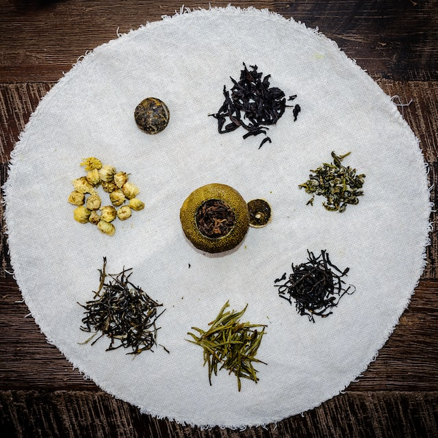

What Are The Health Benefits of Tea?
People all over the world have been drinking tea for thousands of centuries, and for good reason. Numerous studies have shown that a variety of teas may boost your immune system, fight off inflammation, and even ward off cancer and heart disease. While some brews provide more health advantages than others, there's plenty of evidence that regularly drinking tea can have a lasting impact on your wellness. Put the kettle on, because we're sharing some of the biggest benefits hidden in the world's most popular teas.
Teas To Avoid
- Detox teas made for fad diets that suggest you will quickly lose weight. These teas often come laced with laxatives that can be harmful to your health.
- Fancy tea lattes and drinks from your favorite chain store. While some of these drinks, such as a green tea latte, may appear healthy, they are loaded with sugar.
- Trendy bubble teas that are also loaded with sugar, calories and carbs, and have little to no nutritional value.
- Herbal teas that may potentially trigger allergies. Many herbal teas contain different types of fruits, herbs, spices and flowers that some people are allergic to. If you have allergies, always read the ingredients on the package before you consume a new herbal tea.